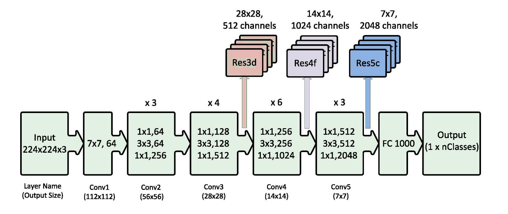

With a global population of over 7.6 billion people, around 61 crore people are affected by uncommon genetic illnesses. Despite the fact that
this is a large report, we still don't see them receiving sufficient care. They are an underserved segment of our community, and we must take
appropriate measures to help them. Though we may not be able to entirely cure the majority of them, we can certainly make a
difference in their life by making small gestures. Solving this problem - Click Button below :))
Employed the ResNet-50 design, which is based on residual learning networks and is therefore easier to optimize, allowing to train deeper networks. As a result, network capacity and performance are improved overall. 
>> On top of VGGFace, I used four Fully Connected layers. Then, on top of it, three fully linked layers and an SVM classifier. The Transfer Learning method allows us to re-use previously learnt features.
The SGD optimizer was employed with a very low learning rate of 0.0001 and a momentum of 0.9.
>> When the validation loss stopped improving, a callback was defined in keras to reduce the learning rate by 0.1.
>> In each example, the batch size was set at 32.
>> As a baseline for good categorization, we try to reduce cross-entropy loss.
>> The deep learning classifier was created using the keras (v2) package.
>> The Tesla K80 GPU was used to train the model.
>> The accuracies stabilised around 100 epochs after a total of 200 epochs were run.
Plot showing Training and Validation Accuracy of VGGFace with 4FC Layers:
Plot showing Training and Validation Accuracy of VGGFace with 3FC Layers and SVM Algorithm applied on top: